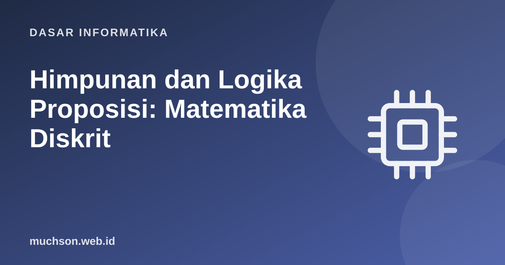

Beranda › Artikel › Dasar Informatika
Dasar InformatikaHimpunan dan Logika Proposisi: Matematika Diskrit
Matematika diskrit adalah bahasa untuk berpikir presisi tentang hal-hal yang terpisah-pisah: himpunan, pernyataan, hubungan, graf, dan hitungan. Ia mendasari basis data, algoritma, kriptografi, dan verifikasi program. Mulailah dari dua pilar: himpunan dan logika.
Sebaiknya sudah paham: logika boolean dasar

Setelah membaca dan mencoba materi ini, Anda mampu:
- menyatakan himpunan dan operasi gabungan, irisan, selisih, komplemen, himpunan kuasa
- menggunakan hukum himpunan dan diagram Venn
- menyusun dan mengevaluasi pernyataan dengan konektif logika dan implikasi
- memakai kuantor universal dan eksistensial dan menegasinya
- mengenali dan menyusun bukti: langsung, kontraposisi, kontradiksi, induksi
Himpunan
Himpunan adalah kumpulan objek berbeda tanpa urutan. Notasi: A = {1, 2, 3}; x ∈ A berarti x anggota A; |A| adalah kardinalitas; ∅ himpunan kosong.
| Operasi | Simbol | Arti | Python | Padanan SQL |
|---|---|---|---|---|
| Gabungan | A ∪ B | anggota A atau B | A | B | UNION |
| Irisan | A ∩ B | anggota A dan B | A & B | INTERSECT / INNER JOIN |
| Selisih | A − B | anggota A yang bukan B | A - B | EXCEPT |
| Selisih simetris | A ⊕ B | anggota salah satu saja | A ^ B | |
| Himpunan bagian | A ⊆ B | semua A ada di B | A <= B | |
| Komplemen | Aᶜ | bukan anggota A dalam semesta U | U - A | NOT IN |
A = {1, 2, 3, 4, 5, 6}
B = {2, 4, 6, 8}
U = set(range(1, 11))
print("A ∪ B =", sorted(A | B))
print("A ∩ B =", sorted(A & B))
print("A − B =", sorted(A - B))
print("A ⊕ B =", sorted(A ^ B))
print("Aᶜ =", sorted(U - A))
print("{2,4} ⊆ A ?", {2, 4} <= A, "| |A ∪ B| =", len(A | B))
# prinsip inklusi-eksklusi: |A ∪ B| = |A| + |B| - |A ∩ B|
print(len(A | B) == len(A) + len(B) - len(A & B))
# hukum De Morgan untuk himpunan: (A ∪ B)ᶜ = Aᶜ ∩ Bᶜ
print("De Morgan:", (U - (A | B)) == ((U - A) & (U - B)))
# himpunan kuasa (semua himpunan bagian): ada 2^n anggota
from itertools import combinations
def himpunan_kuasa(s):
s = list(s)
return [set(c) for r in range(len(s) + 1) for c in combinations(s, r)]
P = himpunan_kuasa({"a", "b", "c"})
print(len(P), "himpunan bagian dari {a,b,c}:", [sorted(x) for x in P])A ∪ B = [1, 2, 3, 4, 5, 6, 8]
A ∩ B = [2, 4, 6]
A − B = [1, 3, 5]
A ⊕ B = [1, 3, 5, 8]
Aᶜ = [7, 8, 9, 10]
{2,4} ⊆ A ? True | |A ∪ B| = 7
True
De Morgan: True
8 himpunan bagian dari {a,b,c}: [[], ['b'], ['c'], ['a'], ['b', 'c'], ['a', 'b'], ['a', 'c'], ['a', 'b', 'c']]
Logika proposisi
Proposisi adalah kalimat yang tepat benar atau salah. Konektif: ¬ (bukan), ∧ (dan), ∨ (atau), → (jika ... maka), ↔ (jika dan hanya jika).
Implikasi p → q hanya salah bila p benar dan q salah. Jika p salah, implikasi benar (vakum): "Jika saya burung, maka saya bisa terbang" benar bagi saya yang bukan burung. Banyak kesalahan penalaran berasal dari salah memahami ini.
from itertools import product
imp = lambda p, q: (not p) or q # p -> q setara dengan (not p) or q
print(" p q p->q q->p ¬q->¬p")
for p, q in product([True, False], repeat=2):
print(f" {p!s:<5} {q!s:<5} {imp(p, q)!s:<6} {imp(q, p)!s:<6} {imp(not q, not p)}")
# konvers (q->p) BUKAN sama dengan implikasi; kontraposisi (¬q->¬p) SAMA
setara = lambda f, g: all(f(p, q) == g(p, q) for p, q in product([True, False], repeat=2))
print("\nimplikasi == konvers :", setara(imp, lambda p, q: imp(q, p)))
print("implikasi == kontraposisi :", setara(imp, lambda p, q: imp(not q, not p)))
print("De Morgan 1 :", setara(lambda p, q: not (p and q), lambda p, q: (not p) or (not q)))
print("p <-> q setara dengan (p->q) and (q->p):", setara(lambda p, q: p == q, lambda p, q: imp(p, q) and imp(q, p))) p q p->q q->p ¬q->¬p
True True True True True
True False False True False
False True True False True
False False True True True
implikasi == konvers : False
implikasi == kontraposisi : True
De Morgan 1 : True
p <-> q setara dengan (p->q) and (q->p): True
Kuantor
| Kuantor | Arti | Contoh | Negasi |
|---|---|---|---|
| ∀x P(x) | untuk semua x, P(x) | Semua mahasiswa memiliki NIM | ∃x ¬P(x): ada mahasiswa tanpa NIM |
| ∃x P(x) | ada x sehingga P(x) | Ada bilangan prima genap | ∀x ¬P(x): tidak ada yang genap |
| ∀x ∃y P(x, y) | untuk setiap x ada y | Setiap orang punya ibu | Urutan kuantor penting! |
data = [4, 8, 15, 16, 23, 42]
print("semua genap? ", all(x % 2 == 0 for x in data)) # ∀
print("ada yang > 40? ", any(x > 40 for x in data)) # ∃
# negasi: ¬∀x P(x) == ∃x ¬P(x)
print("¬(semua genap) == ada yang ganjil:", (not all(x % 2 == 0 for x in data)) == any(x % 2 != 0 for x in data))
# urutan kuantor: ∀x ∃y (y > x) benar di bilangan bulat; ∃y ∀x (y > x) salah
U = range(-5, 6)
print("∀x ∃y y>x :", all(any(y > x for y in U) for x in U), "(di semesta terbatas, x = 5 gagal; di Z tak berhingga benar)")
print("∃y ∀x y>x :", any(all(y > x for x in U) for y in U))semua genap? False
ada yang > 40? True
¬(semua genap) == ada yang ganjil: True
∀x ∃y y>x : False (di semesta terbatas, x = 5 gagal; di Z tak berhingga benar)
∃y ∀x y>x : False
Teknik bukti
| Teknik | Cara | Contoh |
|---|---|---|
| Langsung | Dari asumsi p, turunkan q | Jumlah dua bilangan genap adalah genap: 2a + 2b = 2(a+b) |
| Kontraposisi | Buktikan ¬q → ¬p | Jika n² genap maka n genap: bila n ganjil, n² ganjil |
| Kontradiksi | Asumsikan negasi lalu capai kemustahilan | √2 tak rasional |
| Induksi | Basis + langkah induktif | Jumlah 1 sampai n adalah n(n+1)/2 |
Induksi matematika
Untuk membuktikan P(n) berlaku untuk semua n ≥ 1: (1) basis: P(1) benar; (2) langkah induktif: jika P(k) benar maka P(k+1) benar. Seperti domino: yang pertama jatuh, dan setiap yang jatuh menjatuhkan berikutnya.
P(n): 1 + 2 + … + n = n(n + 1) / 2
- Basis: n = 1 → ruas kiri 1, ruas kanan 1·2/2 = 1. ✓
- Langkah: asumsikan P(k): 1 + … + k = k(k+1)/2. Maka 1 + … + k + (k+1) = k(k+1)/2 + (k+1) = (k+1)(k+2)/2, yaitu P(k+1). ✓
# Pengujian numerik BUKAN bukti, tetapi pemeriksaan yang berguna
print(all(sum(range(1, n + 1)) == n * (n + 1) // 2 for n in range(1, 10000)))
# contoh pernyataan yang tampak benar tetapi salah: n^2 + n + 41 selalu prima
def prima(x): return x > 1 and all(x % d for d in range(2, int(x ** 0.5) + 1))
tandingan = next(n for n in range(100) if not prima(n * n + n + 41))
print("n^2+n+41 prima untuk n=0..", tandingan - 1, "tetapi gagal pada n =", tandingan, "->", tandingan ** 2 + tandingan + 41)True
n^2+n+41 prima untuk n=0.. 39 tetapi gagal pada n = 40 -> 1681
1. Jika A = {1,2,3} dan B = {3,4}, tentukan A ∪ B, A ∩ B, A − B.
2. Tulis kontraposisi dari "Jika program lulus uji maka tidak ada bug yang ditemukan uji."
3. Buktikan dengan induksi bahwa jumlah n bilangan ganjil pertama adalah n².
4. Apa beda "∀x ∃y" dan "∃y ∀x"? Beri contoh bahwa urutannya penting.
- Himpunan: ∪, ∩, −, komplemen, himpunan kuasa (2ⁿ), inklusi-eksklusi.
- Logika: ¬ ∧ ∨ → ↔; p → q setara dengan ¬p ∨ q dan dengan kontraposisinya.
- Kuantor ∀ dan ∃, serta negasinya; urutan kuantor penting.
- Bukti: langsung, kontraposisi, kontradiksi, induksi. Pengujian bukan bukti.
Tanya jawab
Mengapa matematika diskrit penting bagi informatika?
Apa bedanya himpunan dan list?
Apa itu relasi dan fungsi?
Referensi
- Kenneth Rosen, Discrete Mathematics and Its Applications (McGraw-Hill)
- Lehman, Leighton, Meyer, Mathematics for Computer Science (MIT, gratis)
- MIT OpenCourseWare 6.042J: Mathematics for Computer Science
- Dokumentasi Python: set types